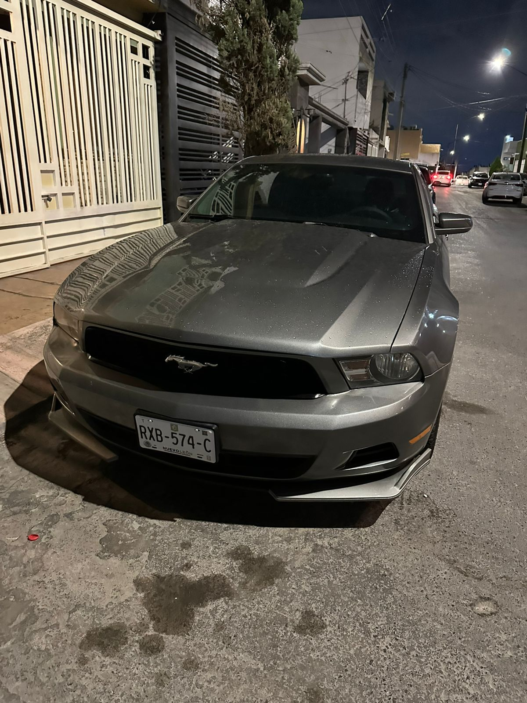

Manejar
En un buen dia con el clima despejado y la carretera solo para mi. Me gusta mucho salir a manejar en mi auto, recorrer la ciudad y carreteras aledañas a ella, no hace falta nada mas que mi auto y una buena seleccion de canciones para tener una excelente tarde, claro que tiene que ser sin trafico. Algun dia me gustaria tener estos carros y poder manejarlos:
- Mustang GT500
- Camaro ZL1
- Corvette